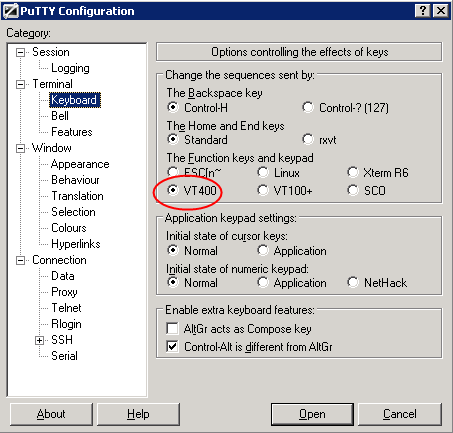

#+OPTIONS: num:t toc:t
前一段由于工作方面的关系，我需要在终端下访问Linux，修改一些代码（由于涉及多个主机，要来回切换，所以还是觉得直接用putty比较直接。至于使用X11版本的Emacs，在本地安装、启动一个X server也挺麻烦的——不过这个问题在发现MobaXterm之后就不是大问题了，这个后面再单独详细介绍），所以上次写了一篇《终端下使用Emacs 的一些Tips》，不过 *最大的问题还是组合键的问题之类的（比如我常用的Shift+Up/Down/Left/Right, Ctrl+F1..F12, Ctrl+Home/End）。
春节前两天有些时间，将以往搜集到Pocket 里面的相关文章研究了一遍，算是基本找到了一些解决办法。
上一篇博客里面提到过，终端模拟器在组合键方面大多遵循一种叫做 Xtermcontrol sequences 的“规范”，这个“规范”简单地表达一下就是：对于有对应ASCII字符的组合健，就发送对应的ASCII字符，否则用一个特殊序列来表示，比如 F1 就用 ^[OP （也就是先按Ctrl+[, 然后按O，然后再按P），或者用 ^[[11~ 来表示， Ctrl-F7 就用 ^[[18;5~ 表示 。这个序列一般都是以 ESC（也即ASCII码中的27，对应实际按键 ESC 或者 Ctrl+[ ，常写为 \e 或者 ^[ ）开始，所以也常常叫做Escape sequences（除了表达按键之外，它还用来表达终端颜色控制）。
注意我上面给”规范“二字加了引号，因为“规范”常常有一个共同的问题：“我们有很多规范”。Xterm control sequences也是这样，一方面有实现先于规范导致的问题，另一方面有一个比较重要的原因：我们有很多种键盘。这也是为什么Putty对于F1..F12功能键盘支持了6种模式: ESC [n~, Linux, Xterm, VT400, VT100+, SCO （见 Putty Docs: Changing the action of the function keys and keypad )。

简单总结一下来说，当在终端里运行应用程序时，按下一个组合键之后的事情是这样:
TERM 在terminfo中查找翻译表，翻译为对应的按键信息，传递给应用程序;
所以可能存在的问题是:
针对这两个问题来考虑:
你得找一个支持较多（或者可以定制的）Xterm control sequences的终端模拟器
Windows环境下, mintty支持的组合键比较全，在mintty里面用ssh连接主机是个不错的主意，不过有少数还是不支持）;
Keycodes - mintty - Character sequences sent by keys in mintty
Linux环境下，Gnome Terminal支持的是VT102/VT220序列。
http://help.gnome.org/users/gnome-terminal/stable/gnome-terminal.html.en
http://www.xfree86.org/current/ctlseqs.html#VT220-Style%20Function%20Keys
如果还是不够多，怎么办：
如果你用的是Windows，那么可以用AutoHotKey拦截组合键，自行翻译到control sequences发送出去:
#if WinActive("ahk_class PuTTY") or WinActive("ahk_class mintty")
;;** Ctrl+Fn
^F1::SendInput {ESC}[1;5P
^F2::SendInput {ESC}[1;5Q
^F3::SendInput {ESC}[1;5R
^F4::SendInput {ESC}[1;5S
^F5::SendInput {Esc}[15;5~
^F6::SendInput {Esc}[17;5~
备注一下，我的办公用机是Windows，我用的终端模拟器是putty及其变种（包括mintty, putty-nd以及MobaXterm）。至于在家，一直是在X桌面上，也很少需要进行telnet/ssh远程链接。所以对于在X上如何自己拦截按键，还不知道什么工具可用。
通常的办法是修改terminfo数据库，将control sequences到按键的映射加进去，然后用tic编译。但这个麻烦了一点，我们有个更好的办法: Emacs可以自己将control sequences翻译为按键信息 :
(define-key input-decode-map "\eO5P" [C-f1]) (define-key input-decode-map "\eO5Q" [C-f2]) (define-key input-decode-map "\eO5R" [C-f3]) (define-key input-decode-map "\eO5S" [C-f4]) (define-key input-decode-map "\e[15;5~" [C-f5]) (define-key input-decode-map "\e[17;5~" [C-f6])
当然，对于其它应用程序，就不一定能自己翻译了，你得硬着头皮去研究terminfo（但有的程序想了一些方法来避免让用户直接了解这些，比如Midnight Commander提供了一个Learn Keys对话框来提示用户输入各种键以将它们与具体键码对应起来）。
^[[ 开始的序列叫做 CSI序列，以 ^[O 开始的序列叫做SS3序列，还有其它的序列。不过CSI算是“主流”，支持的按键比较多，受各种terminfo支持的比率也比较大(不过很多时候是混合使用的，比如下面的XFree86 xterm在F1..F4使用了SS3序列，在F5..F12使用了CSI序列);
;m ，这里m是个数字，其值本来是按位运算的规则来的，分别是: Shift: 1, Alt:2, Ctrl: 4 ，不过还要再加上1。例如:
<code>
| Key | Ins | Shift+Ins | Alt+Ins | Alt+Shift+Ins | Ctrl+Ins | Ctrl+Shift+Ins | Ctrl+Alt+Ins | | Emacs | <insert> | <S-insert> | <M-insert> | <M-S-insert> | <C-insert> | <C-S-insert> | <C-M-insert> | | Xterm ctrlseq | ^[[2~ | ^[[2;2~ | ^[[2;3~ | ^[[2;4~ | ^[[2;5~ | ^[[2;6~ | ^[[2;7~ |
</code>
| key | VT100 | VT220 | X11R6 xterm | XFree86 xterm | rxvt | screen | |-----+-------+--------+-------------+---------------+--------+--------| | F1 | ^[OP | | ^[[11~ | ^[OP | ^[[11~ | ^[OP | | F2 | ^[OQ | | ^[[12~ | ^[OQ | ^[[12~ | ^[OQ | | F3 | ^[OR | | ^[[13~ | ^[OR | ^[[13~ | ^[OR | | F4 | ^[OS | | ^[[14~ | ^[OS | ^[[14~ | ^[OS | | F5 | | | ^[[15~ | ^[[15~ | ^[[15~ | ^[[15~ | | F6 | | ^[[17~ | ^[[17~ | ^[[17~ | ^[[17~ | ^[[17~ | | F7 | | ^[[18~ | ^[[18~ | ^[[18~ | ^[[18~ | ^[[18~ | | F8 | | ^[[19~ | ^[[19~ | ^[[19~ | ^[[19~ | ^[[19~ | | F9 | | ^[[20~ | ^[[20~ | ^[[20~ | ^[[20~ | ^[[20~ | | F10 | | ^[[21~ | ^[[21~ | ^[[21~ | ^[[21~ | ^[[21~ | | F11 | | ^[[23~ | ^[[23~ | ^[[23~ | ^[[23~ | ^[[23~ | | F12 | | ^[[24~ | ^[[24~ | ^[[24~ | ^[[24~ | ^[[24~ |
</code>
F1..F4 跟 F5..F12 差异蛮大，即使在CS1序列中，F1也有 ^[[11~和 ^[1P 两种表示方法，而F5只有 ^[[15~ 这一种表示方法。这是因为在历史上VT100键盘 只有PF1..PF4这四个功能键，并且是在小键盘顶部，所以SSO序列就只有 ^[OP= 到 =^[OS 这四个功能键;^[[15~ )，在F11这里又有一个( ^[[23 )——我不知道这里是个什么典故;F13, F14...F48! （真难以想象）。不过在X11R6/XFree86 xterm的实现中，F13 跟 Shift+F1 的control sequences是一样的( ^[[11;2~ )，F24 跟 Shift+F12 是一样的( ^[[24;2 )，而 F25 跟 Ctrl+F1 是一样的（ ^[[11;5~ )，F37 跟 Ctrl+Shift+F1= 是一样的 ( ^[[24;6~ )。而rxvt和VT220的编码方式就完全不一样了（详情请查看Terminal Function Key Escape Codes);C-return, C-, C-; 这些键在xterm-2.16以上版本支持, 但需要发送特殊序列打开。term/xterm.el会检测是否是xterm>2.16，然后通知xterm打开。其它终端不支持
Shift+F1 , 它会先按 <S-f1> 来查keybinding，如果没有绑定任何功能，则会自动检查不带~Shift~ 的组合（也就是<f1>），如果有对应命令，就调用。如果你用 C-h k 查看某个组合键是否存在绑定，它也会按上面的规则来检查，不会提示 ~<S-f1> is undefined~ , 而是会把f1作为 help-map 的前缀键;
function-key-map: Emacs里面有三个keymap用于“翻译”按键信息: input-decode-map, function-key-map 和 key-translation-map , 功能比较接近，但也存在一些区别(详情可查看Translation Keymaps - GNU Emacs Lisp Reference Manual)：input-decode-map -> local-function-key-map -> key-translation-mapfunction-key-map 与另外两个的区别还有一个区别: 它不是全局性的，而是可以针对多个键盘设备进行设置 (其实是local-function-key-map ） 。不过，除非你在一个Emacs会话里使用多种终端（比如daemon模式），否则你应该不会需要针对多种多个键盘设备进行设置;key-translation-map 一般不用于Xterm control sequences的转换，而是用于功能的替代，比如用<f11>替代<C-x>的功能:<code> (define-key key-translation-map (kbd "<f11>") (kbd "C-x")) </code>
input-decode-map 的描述是 Keymap that decodes input escape sequences, 所以它的用途正是进行我们这里需要的（所以我觉得上面说那个xterm-extra.el里面的用法并不太正确）
<code> | | putty(win) | putty(linux) | mintty | xfce-terminal | gnome-terminal | mate-terminal | xterm | term/xterm.el | | | 0.62 | | 1.1 | 0.48 | 2.16 | 1.4 | 271 | SS3 CSI | |-----------+------------+--------------+---------+---------------+----------------+---------------+---------+------------------------| | up | ^[[A | ^[[A | ^[[A | ^[[A | ^[[A | ^[[A | ^[[A | ^[OA ^[[A | | down | ^[[B | ^[[B | ^[[B | ^[[B | ^[[B | ^[[B | ^[[B | ^[OB ^[[B | | right | ^[[C | ^[[C | ^[[C | ^[[C | ^[[C | ^[[C | ^[[C | ^[OC ^[[C | | left | ^[[D | ^[[D | ^[[D | ^[[D | ^[[D | ^[[D | ^[[D | ^[OD ^[[D | | home | ^[[1~ | ^[[1~ | ^[[H | ^[OH | ^[OH | ^[OH | ^[[H | ^[OH ^[[1~ | | end | ^[[4~ | ^[[4~ | ^[[F | ^[OF | ^[OF | ^[OF | ^[[F | ^[OF ^[[4~ (<select>) | | S-up | - | - | (term) | (term) | ^[[2A ? | ^[[1;2A | ^[[1;2A | ^[O2A ^[[1;2A | | S-down | - | - | (term) | (term) | ^[[2B ? | ^[[1;2B | ^[[1;2B | ^[O2B ^[[1;2B | | S-right | - | - | ^[[1;2C | ^[[1;2C | ^[[2C ? | ^[[1;2C | ^[[1;2C | ^[O2C ^[[1;2C | | S-left | - | - | ^[[1;2D | ^[[1;2D | ^[[2D ? | ^[[1;2D | ^[[1;2D | ^[O2D ^[[1;2D | | S-home | - | - | (term) | (term) | (term) | (term) | ^[[1;2H | ^[O2H ^[[1;2H | | S-end | ^[[4~ | - | (term) | (term) | (term) | (term) | ^[[1;2F | ^[O2F ^[[1;2F | | M-up | ^[\e[A | ^[\e[A | ^[[1;3A | ^[[1;3A | ^[[3A ? | ^[[1;3A | ^[[1;3A | ____ ^[[1;3A | | M-down | ^[\e[B | ^[\e[B | ^[[1;3B | ^[[1;3B | ^[[3B ? | ^[[1;3B | ^[[1;3B | ____ ^[[1;3B | | M-right | ^[\e[C | ^[\e[C | ^[[1;3C | ^[[1;3C | ^[[3C ? | ^[[1;3C | ^[[1;3C | ____ ^[[1;3C | | M-left | ^[\e[D | ^[\e[D | ^[[1;3D | ^[[1;3D | ^[[3D ? | ^[[1;3D | ^[[1;3D | ____ ^[[1;3D | | M-home | ^[\e[1~ | ^[\e[1~ | ^[[1;3H | - | - | - | ^[[1;3H | ____ ^[[1;3H | | M-end | ^[\e[4~ | ^[\e[4~ | ^[[1;3F | - | - | - | ^[[1;3F | ____ ^[[1;3F | | C-up | - | - | ^[[1;5A | ^[[1;5A | ^[[5A ? | ^[[1;5A | ^[[1;5A | ^[O5A ^[[1;5A | | C-down | - | - | ^[[1;5B | ^[[1;5B | ^[[5B ? | ^[[1;5B | ^[[1;5B | ^[O5B ^[[1;5B | | C-right | / | - | ^[[1;5C | ^[[1;5C | ^[[5C ? | ^[[1;5C | ^[[1;5C | ^[O5C ^[[1;5C | | C-left | / | - | ^[[1;5D | ^[[1;5D | ^[[5D ? | ^[[1;5D | ^[[1;5D | ^[O5D ^[[1;5D | | C-home | / | / | ^[[1;5H | - | - | - | ^[[1;5H | ^[O5H ^[[1;5H | | C-end | / | / | ^[[1;5F | - | - | - | ^[[1;5F | ^[O5F ^[[1;5F | | C-S-up | | | | | ^[[6A ? | - | ^[[1;6A | ____ ^[[1;6A | | C-S-down | | | | | ^[[6B ? | - | ^[[1;6B | ____ ^[[1;6B | | C-S-right | | | | | ^[[6C ? | ^[[1;6C | ^[[1;6C | ____ ^[[1;6C | | C-S-left | | | | | ^[[6D ? | ^[[1;6D | ^[[1;6D | ____ ^[[1;6D | | C-M-up | ^[\eOA | ^[\eOA | ^[[1;7A | ^[[1;7A | ^[[7A ? | ^[[1;7A | ^[[1;7A | ____ ^[[1;7A | |-----------+------------+--------------+---------+---------------+----------------+---------------+---------+------------------------| | | putty(win) | putty(linux) | mintty | xfce-terminal | gnome-terminal | mate-terminal | xterm | term/xterm.el | | | 0.62 | | 1.1 | 0.48 | 2.16 | 1.4 | 271 | SS3 CSI | |----------+------------+--------------+---------+-------------------+----------------+---------------+---------+---------------| | insert | ^[[2~ | ^[[2~ | ^[[2~ | ^[[2~ | ^[[2~ | ^[[2~ | ^[[2~ | ____ ^[[2~ | | delete | ^[[3~ | ^[[3~ | ^[[3~ | ^[[3~ | ^[[3~ | ^[[3~ | ^[[3~ | ____ ^[[3 | | pgup | ^[[5~ | ^[[5~ | ^[[5~ | ^[[5~ | ^[[5~ | ^[[5~ | ^[[5~ | ____ ^[[5~ | | pgdn | ^[[6~ | ^[[6~ | ^[[6~ | ^[[6~ | ^[[6~ | ^[[6~ | ^[[6~ | ____ ^[[6~ | | S-insert | (paste) | - | (paste) | (paste) | (paste) | (paste) | (paste) | ____ ^[[2;2~ | | S-delete | ^[[3~ x | - | ^[[3;2~ | ^[[3;2~ | ^[[3;2~ | ^[[3;2~ | ^[[3;2~ | ____ ^[[3;2~ | | S-pgup | (term) | / | (term) | (term) | (term) | (term) | (term) | ____ ^[[5;2~ | | S-pgdn | (term) | / | (term) | (term) | (term) | (term) | (term) | ____ ^[[6;2~ | | M-insert | ^[\e[2~ | ^[\e[2~ | ^[[2;3~ | ^[[2;3~ | ^[[2;3~ | ^[[2;3~ | ^[[2;3~ | ____ ^[[2;3~ | | M-delete | ^[\e[3~ | ^[\e[3~ | ^[[3;3~ | ^[[3;3~ | ^[[3;3~ | ^[[3;3~ | ^[[3;3~ | ____ ^[[3;3~ | | M-pgup | ^[\e[5~ | ^[\e[5~ | ^[[5;3~ | ^[[5;3~ | ^[[5;3~ | ^[[5;3~ | ^[[5;3~ | ____ ^[[5;3~ | | M-pgdn | ^[\e[6~ | ^[\e[6~ | ^[[6;3~ | ^[[6;3~ | ^[[6;3~ | ^[[6;3~ | ^[[6;3~ | ____ ^[[5;3~ | | C-insert | / | / | (copy) | (copy) | (copy) | (copy) | ^[[2;5~ | ____ ^[[2;5~ | | C-delete | / | / | ^[[3;5~ | ^[[3;5~ | ^[[3;5~ | ^[[3;5~ | ^[[3;5~ | ____ ^[[3;5~ | | C-pgup | (term) | / | ^[[5;5~ | ^[[5;5~ (prevtab) | ^[[5;5~ | ^[[5;5~ | ^[[5;5~ | ____ ^[[5;5~ | | C-pgdn | (term) | / | ^[[6;5~ | ^[[6;5~ (nexttab) | ^[[6;5~ | ^[[6;5~ | ^[[6;5~ | ____ ^[[6;5~ | |----------+------------+--------------+---------+-------------------+----------------+---------------+---------+---------------| | | putty(win) | putty(linux) | mintty | xfce-terminal | gnome-terminal | mate-terminal | xterm | term/xterm.el | | | 0.62 | | 1.1 | 0.48 | 2.16 | 1.4 | | SS3 CSI | |----------+------------+--------------+-------------+---------------+----------------+---------------+----------+----------------| | f1 | ^[[11~ | ^[[11~ | ^[OP | ^[OP (help) | ^[OP (help) | ^[OP (help) | ^[OP | ^[OP ^[[11~ | | f2 | ^[[12~ | ^[[12~ | ^[OQ | ^[OQ | ^[OQ | ^[OQ | ^[OQ | ^[OQ ^[[12~ | | f3 | ^[[13~ | ^[[13~ | ^[OR | ^[OR | ^[OR | ^[OR | ^[OR | ^[OR ^[[13~ | | f4 | ^[[14~ | ^[[14~ | ^[OS | ^[OS | ^[OS | ^[OS | ^[OS | ^[OS ^[[14~ | | S-f1 | ^[[23~ | ^[[23~ | ^[[1;2P | ^[O1;2P x | ^[O2P | ^[O1;2P x | ^[[1;2P | ^[O2P ^[[1;2P | | S-f2 | ^[[24~ | ^[[24~ | ^[[1;2Q | ^[O1;2Q x | ^[O2Q | ^[O1;2Q x | ^[[1;2Q | ^[O2Q ^[[1;2Q | | M-f1 | ^[^[[11~ | ^[^[[11~ | ^[[1;3P | ^[O1;3P x | ^[O3P | ^[O1;3P x | ^[[1;3P | ^[O3P ____ | | M-f2 | ^[^[[12~ | ^[^[[12~ | ^[[1;2Q | ^[O1;3Q x | ^[O2Q | ^[O1;3Q x | ^[[1;3Q | ^[O3Q ____ | | C-f1 | - | - | ^[[1;5P | / | / | / | ^[[1;5P | ^[O5P ____ | | C-f2 | - | - | ^[[1;5Q | ^[O1;5Q x | ^[O5Q | ^[O1;5Q x | ^[[1;5Q | ^[O5Q ____ | | M-S-f1 | ^[^[23~ | ^[^[23~ | ^[[1;4P | ^[O1;4P x | ^[O4P | ^[O1;4P x | ^[[1;4P | ^[O4P ____ | | M-S-f1 | ^[^[24~ | ^[^[24~ | ^[[1;4Q | ^[O1;4Q x | ^[O4Q | ^[O1;4Q x | ^[[1;4Q | ^[O4Q ____ | | C-S-f1 | - | - | ^[[1;6P | ^[O1;6P x | ^[O6P | ^[O1;6P x | ^[[1;6P | ^[O6P ____ | | C-M-f1 * | - | - | ^[[1;7P | - | - | - | | ____ ____ | | C-M-f2 * | - | - | ^[[1;7Q | - | - | - | - | ____ ____ | | f5 | ^[[15~ | ^[[15~ | ^[[15~ | ^[[15~ | ^[[15~ | ^[[15~ | ^[[15~ | ____ ^[[15~ | | f6 | ^[[17~ | ^[[17~ | ^[[17~ | ^[[17~ | ^[[16~ | ^[[16~ | ^[[16~ | ____ ^[[16~ | | S-f5 | ^[[28~ | ^[[28~ | ^[[15;2~ | ^[[15;2~ | ^[[15;2~ | ^[[15;2~ | ^[[15;2~ | ____ ^[[15;2~ | | S-f6 | ^[[29~ | ^[[29~ | ^[[17;2~ | ^[[17;2~ | ^[[17;2~ | ^[[17;2~ | ^[[17;2~ | ____ ^[[17;2~ | | M-f5 | ^[^[[15~ | ^[^[[15~ | ^[[15;3~ | ^[[15;3~ | ^[[15;3~ | ^[[15;3~ | ^[[15;3~ | ____ ^[[15;3~ | | C-f5 | - | - | ^[[15;5~ | ^[[15;5~ | ^[[15;5~ | ^[[15;5~ | ^[[15;5~ | ____ ^[[15;5~ | | M-S-f5 | ^[^[[28~ | ^[^[[28~ | ^[[15;4~ | ^[[15;4~ | ^[[15;4~ | ^[[15;4~ | ^[[15;4~ | ____ ^[[15;4~ | | C-S-f5 | - | - | ^[[15;6~ | ^[[15;6~ | ^[[15;6~ | ^[[15;6~ | ^[[15;6~ | ____ ^[[15;6~ | | C-M-f5 | - | - | ^[[15;7~ | - | - | - | | ____ _____ | |----------+------------+--------------+-------------+---------------+----------------+---------------+----------+----------------| | S-tab | ^[[Z | ^[[Z | ^[[Z | ^[[Z | ^[[Z | ^[[Z | ^[[Z | ^[[27;2;9~ | | C-tab | - | - | ^[[1;5I | - | - | - | | ^[[27;5;9~ | | S-return | | | ^j * | ^m x | ^m x | ^m x | | ^[[27;2;13~ | | C-return | | | ^^ * | ^j * | ^j * | ^j * | | ^[[27;5;13~ | | S-Bksp | - | - | ^? *(=bksp) | - | - | - | | --- | | C-Bksp | - | - | ^_ * | - | - | - | ^h x | --- | | | | | | | | | | |
/ * - 等键，在emacs里面却是 \eOP .. \eOS (跟XFree86 xterm的F1..F4)一致。读了一下Putty的文档才发现有个Application Keypad功能，服务器端的程序可以打开或者关闭。不过Putty提供了禁用选项，这样numlock就又可以普通控制keypad的功能了（不过数字键和光标键也不再发送M-O序列了）| Keyboard-Settings.png | 14.4kb |
{kind=link}
{kind=link}